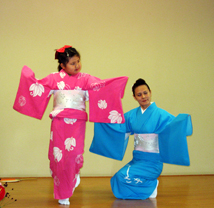
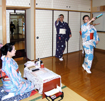
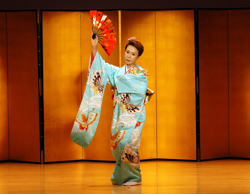
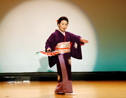

日本舞踊はお子様からご年配の方まで楽しめます。
日本舞踊を習うことで立ち振る舞いが綺麗になり、ふとした仕草も美しくなります。
また体力強化、足腰の強化にもなり、ダイエットにも大変効果的です。
まずは御連絡頂き、お気軽に教室をご見学頂ければと思います。
東京本部 稽古場
■ 住所：杉並区荻窪4-22-17 （JR・地下鉄丸の内線 荻窪駅より徒歩５分。）
■ TEL：03-3391-0368
■ 稽古日：水曜日・金曜日 午後2時～8時まで
|
↑クリックすると大きなサイズで印刷できます |
子供クラス
子供クラスは3歳から小学生までのお子さんのクラスです。 童謡など「子どもの踊り」で日本舞踊の基礎をやさしく 楽しく学びます。 上達に応じて古典舞踊を学んでいきます。 お子さんは環境で礼儀作法などを自然に身に付けられます。 日本舞踊を踊って,記憶力と感性豊かな文武両道な 子供に成長します。 着物を着て踊る姿はかわいく、 きっとみんなの注目の的になるでしょう。
■ 親子教室 踊りを踊りたいお母さんはご一緒にお稽古できます。 ■ 月謝 3回 3,000円～ （学割で半額になっています） ※子供用の着物の無料レンタルあります。（稽古用・舞台用） |
 |
一般クラス
稽古は個人レッスンです。 小曲舞踊・古典舞踊・民謡舞踊などを学びます。 踊りが全く初めてという方は歩き方、立ち居振る舞いなど、 基礎から丁寧にお稽古します。 経験者の方は上達具合やご希望に応じてお稽古します。
着物が１人で着れるようになれます。 着物が着れない人は着付も丁寧にお稽古します。 着物をお持ちでない人は着物のレンタルもございます。 着物用のロッカーもございますので、仕事帰りでもお稽古に 通いやすいです。
■ 月謝 3回 6,000円～ |
 |
専門クラス
名取教授免許状資格取得をご希望の方のためのコースです。
 
着付けクラス
着物が1人で着れるようになりたい人のためのクラスです。 お茶やお花のお稽古や、着物で街歩きたいなど、ご希望の着物と帯結びでお稽古できます。 夏は浴衣と半幅帯の短期レッスンもいたします。
■月謝 3回 6,000円～ ※踊りクラスの人は着付のご指導は無料でいたします。 |